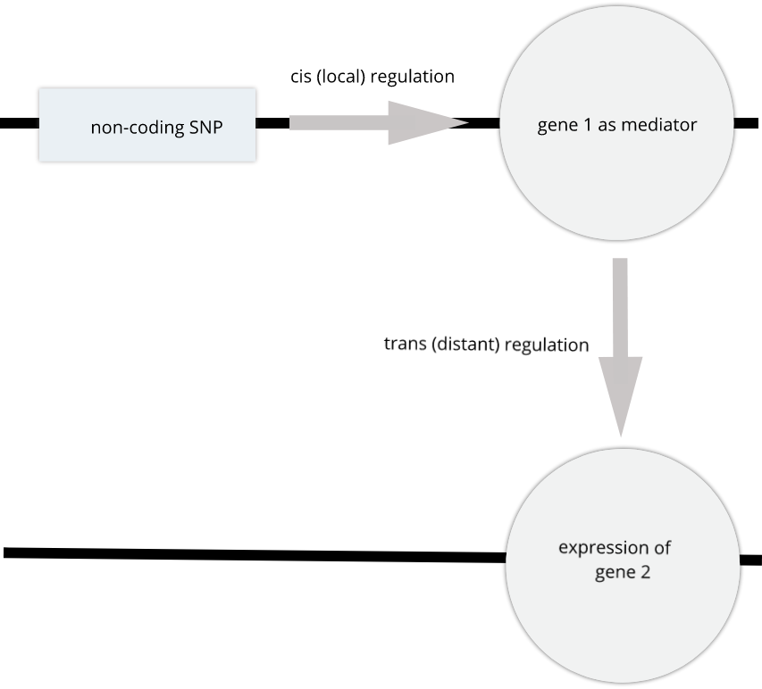

Mediation Analysis
Last updated on 2024-11-20 | Edit this page
Estimated time: 30 minutes
Overview
Questions
- What is mediation analysis?
- How do I explore causal relations with mediation analysis?
Objectives
- Describe mediation analysis as applied in genetics and genomics.
GWAS studies show that most disease-associated variants are found in non-coding regions. This fact leads to the idea that regulation of gene expression is an important mechanism enabling genetic variants to affect complex traits. Mediation analysis can identify a causal chain from genetic variants to molecular and clinical phenotypes. The graphic below shows complete mediation, in which a predictor variable does not directly impact the response variable, but does directly the mediator. The mediator has a direct impact on the response variable. We would observe the relationship between predictor and response, not knowing that a mediator intervenes in this relationship.
 Mediation analysis is widely used in the social sciences including
psychology. In biomedicine, mediation analysis has been employed to
investigate how gene expression mediates the effects of genetic variants
on complex phenotypes and disease.
Mediation analysis is widely used in the social sciences including
psychology. In biomedicine, mediation analysis has been employed to
investigate how gene expression mediates the effects of genetic variants
on complex phenotypes and disease.
For example, a genetic variant (non-coding SNP) indirectly regulates expression of gene 2 through a mediator, gene 1. The SNP regulates expression of gene 1 in cis, and expression of gene 1 influences expression of gene 2 in trans.
 Instead of the expression of one gene impacting another, expression of gene 1 in the graphic above could impact a physiological phenotype like blood glucose. Expression of gene 1 would mediate the relationship between the non-coding SNP and the glucose phenotype.
Gene Akr1e1 is located on chromosome 13 in mouse. How would you interpret the LOD plot below? On which chromosome(s) would you expect to find the driver gene(s)? The SNP(s)?
 Myo15b is located on chromosome 11. How would you interpret the
following LOD plot? On which chromosome(s) would you expect to find the
driver gene(s)? The SNP(s)?
Myo15b is located on chromosome 11. How would you interpret the
following LOD plot? On which chromosome(s) would you expect to find the
driver gene(s)? The SNP(s)?
 The QTL
Viewer for the Attie islet data integrates mediation into
exploration of the data. Below, mediation analysis identifies gene Hnf4a
as the chromosome 2 gene that impacts Myo15b expression.
The QTL
Viewer for the Attie islet data integrates mediation into
exploration of the data. Below, mediation analysis identifies gene Hnf4a
as the chromosome 2 gene that impacts Myo15b expression.

Load Functions
R
rankZ = function(x) {
x = rank(x, na.last = "keep", ties.method = "average") / (sum(!is.na(x)) + 1)
return(qnorm(x))
}
Load Data
R
# expression data
load("../data/attie_DO500_expr.datasets.RData")
WARNING
Warning in readChar(con, 5L, useBytes = TRUE): cannot open compressed file
'../data/attie_DO500_expr.datasets.RData', probable reason 'No such file or
directory'ERROR
Error in readChar(con, 5L, useBytes = TRUE): cannot open the connectionR
# data from paper
load("../data/dataset.islet.rnaseq.RData")
WARNING
Warning in readChar(con, 5L, useBytes = TRUE): cannot open compressed file
'../data/dataset.islet.rnaseq.RData', probable reason 'No such file or
directory'ERROR
Error in readChar(con, 5L, useBytes = TRUE): cannot open the connectionR
# phenotypes
load("../data/attie_DO500_clinical.phenotypes.RData")
WARNING
Warning in readChar(con, 5L, useBytes = TRUE): cannot open compressed file
'../data/attie_DO500_clinical.phenotypes.RData', probable reason 'No such file
or directory'ERROR
Error in readChar(con, 5L, useBytes = TRUE): cannot open the connectionR
# mapping data
load("../data/attie_DO500_mapping.data.RData")
WARNING
Warning in readChar(con, 5L, useBytes = TRUE): cannot open compressed file
'../data/attie_DO500_mapping.data.RData', probable reason 'No such file or
directory'ERROR
Error in readChar(con, 5L, useBytes = TRUE): cannot open the connectionR
# genotype probabilities
probs = readRDS("../data/attie_DO500_genoprobs_v5.rds")
WARNING
Warning in gzfile(file, "rb"): cannot open compressed file
'../data/attie_DO500_genoprobs_v5.rds', probable reason 'No such file or
directory'ERROR
Error in gzfile(file, "rb"): cannot open the connectionExample from package. This will be removed, but I needed it for now.
R
# DOQTL liver protein expresion dataset
data(Tmem68)
# Let us mediate Tmem68 to other proteins
trgt = matrix(Tmem68$target, ncol = 1, dimnames = list(names(Tmem68$target), 'Tmem68'))
annot = Tmem68$annotation
colnames(annot)[5] = 'MIDDLE_POINT'
med <- mediation.scan(target = trgt,
mediator = Tmem68$mediator,
annotation = annot,
covar = Tmem68$covar,
qtl.geno = Tmem68$qtl.geno)
# Interactive plot
kplot(med)
Searching for Candidate Genes
Mapping the Phenotype
We will map the Insulin tAUC trait becuase it has a QTL
on chromosome 11. First, we will rankZ transform the
phenotypes because this helps to satisfy the model assumptions. We will
map using sex, generation, and the number of days on the diet as
additive covariates.
R
# NOTE: QTL is not nearly as large with untransformed phenotype.
pheno_rz = pheno_clin %>%
select(num_islets:weight_10wk) %>%
as.matrix()
ERROR
Error: object 'pheno_clin' not foundR
pheno_rz = apply(pheno_rz, 2, rankZ)
ERROR
Error: object 'pheno_rz' not foundR
covar$DOwave = factor(covar$DOwave)
ERROR
Error: object 'covar' not foundR
addcovar = model.matrix(~sex + DOwave + diet_days, data = covar)[,-1]
ERROR
Error: object 'covar' not foundR
ins_qtl = scan1(genoprobs = probs,
pheno = pheno_rz[,'Ins_tAUC', drop = FALSE],
kinship = K,
addcovar = addcovar)
ERROR
Error: object 'probs' not foundR
plot_scan1(ins_qtl, map, main = 'Insulin tAUC')
ERROR
Error: object 'ins_qtl' not foundThere is a large peak on chromosome 11. Let’s look at the LOD score and the location.
R
peaks = find_peaks(ins_qtl, map, threshold = 10, prob = 0.95)
ERROR
Error: object 'ins_qtl' not foundR
peaks
ERROR
Error: object 'peaks' not foundLet’s also estimate the founder allele effects for
insulin tAUC.
TBD: This is slow. Precalculate and just show the plot?
R
chr = '11'
feff = scan1blup(genoprobs = probs[,chr],
pheno = pheno_rz[,'Ins_tAUC', drop = FALSE],
kinship = K[[chr]],
addcovar = addcovar)
ERROR
Error: object 'probs' not foundR
plot_coefCC(feff, map, scan1_output = qtl, legend = 'bottomleft')
ERROR
Error: object 'feff' not foundLooking at the founder allele effects above, we can see that A/J, BL6, 129, and NOD alleles contribute to higher insulin tAUC values. Ideally, we are looking for a gene with a pattern of allele effects that matches this pattern, or it’s inverse.
TBD: Plot founder allele effects for two genes, one with a similar pattern, one without.
Searching for cis-eQTL under a physiological QTL
When we have a physiological QTL, we often start by looking for genes which contain missense, splice, or stop codon SNPs. This is a reasonable first approach to selecting candidate genes and may pay off. However, many QTL fall in intergenic regions, which suggests that the causal variant(s) may be in regulatory regions. These regulatory regions are not as well annotated as coding regions and it may be difficult to identify them from sequence alone. However, if you have gene expression data in a relevant tissue, you can look for genes in the QTL interval which have a cis-eQTL. If the pattern of founder allele effects for a candidate gene is similar to the allele effects of the physiological QTL, then this gene is a good candidate.
TBD: Need a figure with physiological QTL effect & cis-eQTL effects.
We have a QTL for insulin tAUC that extends from Mb to Mb. This support interval means that we expect the causal variant to be within this interval 95% of the time. We would like to select a set of candidate genes located near this QTL. If the causal variant is a coding SNP, then the gene will be located within this interval. However, if the causal variant is a regulatory SNP, then the gene that it regulates may be up to 2 Mb away from the variant. This means that we should be searching for genes within 2 Mb of the edges of the support interval.
TBD: Is there a REF for the +/- 2 Mb distance?
First, we need to get the support interval and add 2 MB to each side.
R
ci = c(peaks$ci_lo - 2, peaks$ci_hi + 2)
ERROR
Error: object 'peaks' not foundNext, we filter the eQTL results to retain genes in this interval.
R
cis_eqtl = dataset.islet.rnaseq$lod.peaks %>%
filter(chrom == '11' &
pos >= ci[1] &
pos <= ci[2])
ERROR
Error: object 'dataset.islet.rnaseq' not foundThere are r nrow(cis_eqtl) genes with cis-eQTL in this interval. That is a lot of genes! We could estimate the founder allele effects for each of the genes and stare at them pensively. Or we could add each gene to the QTL mapping model and see if the LOD score changes.
Mapping the Phenotype with a Gene as as Covariate
In QTL mediation analysis, we are hypothesizing that there is a genomic variant which affects the expression of a gene, which in turn affects the physiological phenotype.
TBD: Add mediation figure here again?
There is a gene called Slfn3 under the Insulin tAUC peak. Our hypothesis is that this gene may influence Insulin AUC becuase it has a cis-eQTL in the same location. In order to test this hypothesis, we will add the expression of this gene to the model as an additive covariate. If Slfn3 explains some of the variance in Insulin tAUC, then the LOD should decrease. If it does not, then the LOD will not change much.
R
covar_gene = cbind(norm[rownames(addcovar), 'ENSMUSG00000018986'], addcovar)
ERROR
Error: object 'addcovar' not foundR
slfn3_qtl = scan1(genoprobs = probs,
pheno = pheno_rz[,'Ins_tAUC', drop = FALSE],
kinship = K,
addcovar = covar_gene)
ERROR
Error: object 'probs' not foundR
plot_scan1(ins_qtl, map, chr = chr, main = 'Insulin tAUC with Slfn3')
ERROR
Error: object 'ins_qtl' not foundR
plot_scan1(slfn3_qtl, map, chr = chr, color = 'blue', add = TRUE)
ERROR
Error: object 'slfn3_qtl' not foundAs you can see, the LOD decreased when we added the expression of Slfn3 into the model. Let’s see what the new LOD is on chromosome 11.
R
find_peaks(qtl, map, threshold = 6.5)
ERROR
Error: object 'qtl' not foundThe LOd decreased from 10.3 to 7.2.
DMG: STOPPED HERE
Searching for Causal Genes
In mediation analysis, we don’t know the causal gene in advance. We must fit a model like the one above for each gene that was measured. But this would involve mapping the trait across the entire genome for each gene. We don’t need to do this to identify causal genes under the phenotype QTL. We only need to fit a model using each gene at the position of the phenotype QTL.
Mediation analysis requires five pieces of data and metadata:
- Target: the phenotype that has a QTL for which we are seeking causal gene candidates.
- Mediator: gene expression for genes that will be used in the mediation analysis.
- Annotation: gene annotation data for the mediator genes.
- Covar: a set of covariates to use in the model.
- QTL.Geno: the genotype probabilities at the Target maximum QTL.
Challenge 1: Can you do it?
Visit the Attie islet data QTL viewer:
https://churchilllab.jax.org/qtlviewer/attie/islets# 1.
Select Islet RNA for the current data set.
2. Type in a gene symbol to search for.
3. Click on the highest peak in the LOD plot.
4. Look at the Effects in the bottom right panel.
5. Select the Mediation tab and click the LOD peak again.
6. Hover over the dots in the mediation plot to discover genes that
raise or lower the peak.
Key Points
- Mediation analysis investigates an intermediary between an independent variable and its effect on a dependent variable.
- Mediation analysis is used in high-throughput genomics studies to identify molecular phenotypes, such as gene expression or methylation traits, that mediate the effect of genetic variation on disease phenotypes or other outcomes of interest.